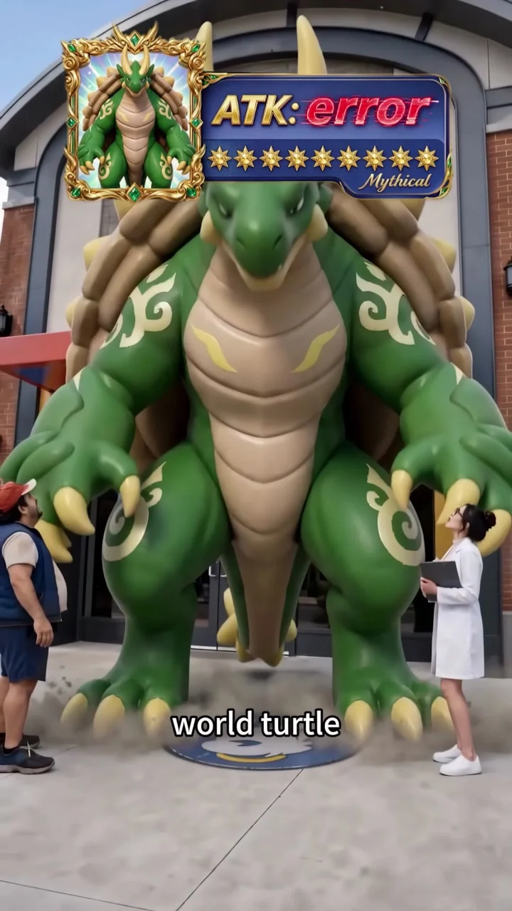
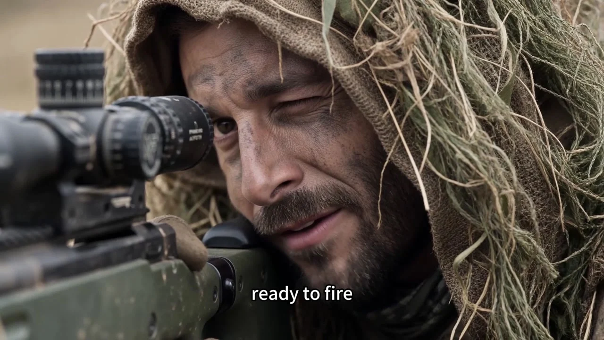
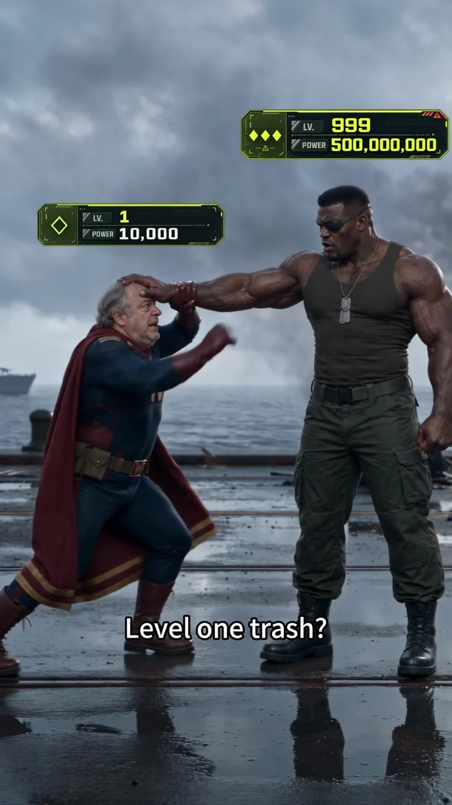
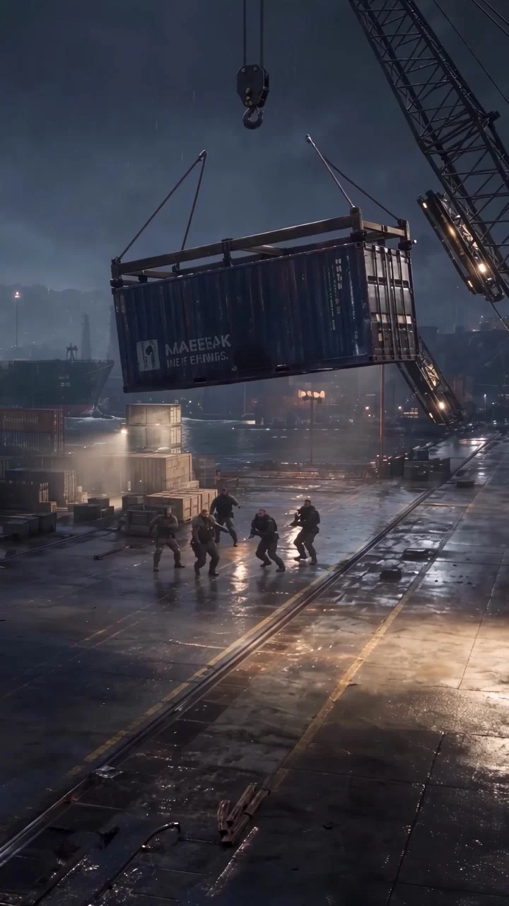

01 / 创意与分镜
GPT / ChatGPT
把一个想法，拆成可以执行的镜头。
- 输入
- 创意主题、剧情目标、角色关系与参考资料
- 产出
- 脚本结构、镜头任务、提示词草案与检查清单
创意想法 → 剧情结构 → 镜头清单
查看制作要点
- 梳理开场信息、冲突与反转，让每一镜承担明确任务。
- 把主体、动作、空间关系和镜头终态写清楚，减少含糊指令。
- 对照已确认内容检查逻辑与连续性，再由人工决定取舍。
检查重点：剧情逻辑、指代关系、对白时长、前后镜头衔接。
脚本拆解 · 提示词组织 · 逻辑检查
角色与场景 · 视觉静帧 · 局部修订
动态生成 · 参考控制 · 镜头迭代
AI 工具与制作流程
GPT 拆解想法，GPT Image 建立视觉，
Seedance 生成镜头，后期完成表达。
把一个想法，拆成可以执行的镜头。
检查重点：剧情逻辑、指代关系、对白时长、前后镜头衔接。
先建立视觉依据，再进入动态镜头。
检查重点：身份特征、服装细节、构图、手部和文字准确性。
让静态设定，成为有动作与节奏的镜头。
检查重点：人物漂移、动作因果、肢体异常、穿模、闪烁与镜头衔接。
把生成素材，组织成完整的视觉表达。
工程案例：固定遮罩数字滚动、缓动回落、合成计数批量更新。
精选影像
奇幻角色、剧情反转与动作演示。
点击观看完整作品。
 0:59
0:59战地剧情
战壕里的紧张躲藏，以人物对话转入游戏画面。
 0:57
0:57奇幻反转
水晶召唤仪式，以角色对照推进反转。

0:58角色成长
小型龟类角色与巨型形态，形成鲜明尺度反差。
 0:21
0:21短篇反转
同一鉴定台前，三次揭晓构成短节奏反转。

0:44双人剧情
荒野潜伏中的双人对话，连接狙击与战场演示。
 0:59
0:59演示叙事
靶场测试与结果特写，把比较关系讲清楚。

0:54夸张开场
披风角色的反差开场，切入第一人称游戏画面。

0:59动作视角
峡谷、港口与雪地之间，连续展开第一人称动作。
生成与后期
拆分镜头任务，检查生成结果，
再用剪辑和动效完成表达。
先确定每个镜头传递的信息，再安排景别、视线与切镜。
明确主体、构图、动作与终态；连续镜头使用一致的角色和场景约束。
逐项观察角色漂移、肢体异常、穿模、闪烁以及动作衔接。
剪辑节奏、字幕、声音与图形包装共同服务于信息表达。
项目脚本将数值排成纵向序列，用固定遮罩限定窗口；位移经过超调与回落，配合缓动和运动模糊形成读数变化。
依据项目中的 mg_roll.jsx、chance_down.jsx 和 update_kill_counts.jsx 整理。右侧为网页原理演示，不是 AE 工程渲染。
等待播放
作品页展示成片可观察的镜头设计；AE 案例有项目脚本依据。具体生成模型、原始提示词、团队分工与投放数据需由制作记录确认，不以工具名或效果推测代替。
镜头拆解
从真实成片看构图、连续性与剪辑。
点击关键帧，定位到相应段落。
人物与叙事
如何让人物对话与游戏画面连成一段故事？
战壕特写交代人物处境，巡逻镜头补足威胁来源；手机承担从剧情到游戏演示的视觉连接。
由成片整理的技术拆解；不将画面效果推定为某个模型或工作流的使用记录。
角色与视觉效果
如何把角色强弱变化变成观众能读懂的反转？
重复的召唤场景建立比较基准，再通过人物反应、光柱和生物尺度变化揭晓结果。
由成片整理的技术拆解；不将画面效果推定为某个模型或工作流的使用记录。
动作与剪辑
如何让一次测试的过程与结果都被看见？
弹药展示、射击动作与靶面结果分别承担信息任务，用重复结构让不同结果容易比较。
由成片整理的技术拆解；不将画面效果推定为某个模型或工作流的使用记录。